Maps Static APIを利用するまでの手順
-
googleアカウントを用意する。
Google Cloud Platform
にアクセスしログインする。
左上のプロジェクト名部分を選択する。

-
新しい任意のプロジェクト名を入力し「作成」ボタンを押す。
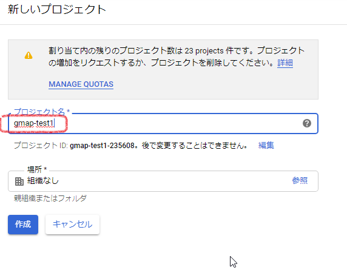
-
左上の部分が先ほど入力したプロジェクト名になっていることを確認する。
「Maps Static API」を使用するため、「ライブラリ」をクリックする。
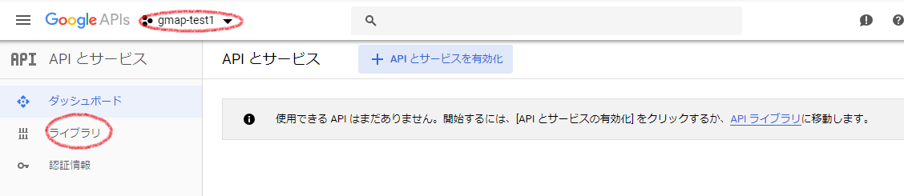
-
検索テキストボックスに「Maps Static API」を入力してAPIを検索する。
検索されたAPIの中から「Maps Static API」を選択する。

-
「有効」ボタンを押す。

-
次にAPIキーを作成するため、「認証情報」タブをクリックする。

-
「認証情報を作成」を押す。

-
作成されたAPIキーを確認し「完了」ボタンを押す。

-
APIキーをコピペして保持しておく。

-
地図を記載したいhtmlファイルに下記を記述する。
【APIキー】部分に上記で保持していたAPIキーを記述する。
Demo<img src="https://maps.googleapis.com/maps/api/staticmap ?center=26.676750,127.908177 &zoom=15 &size=640x480 &key=【APIキー】" />
APIキーに制限をかける
-
「Google Cloud Platform」にアクセスしAPIを選択する。
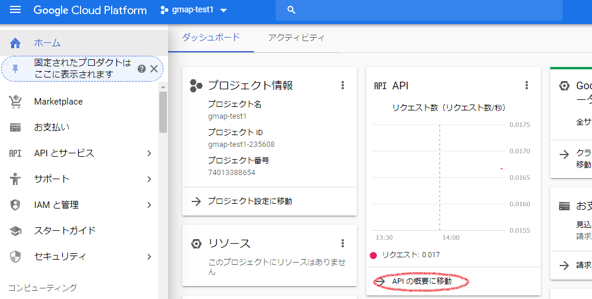
-
「認証情報」をクリックし、APIキー一覧から該当する行の「編集」アイコンを押下。
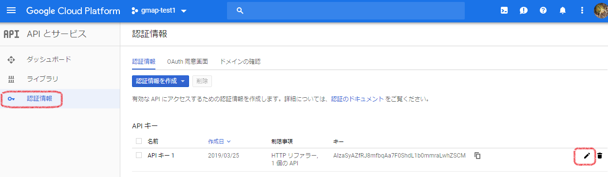
-
「HTTPリファラ（ウェブサイト）」を選択し、URLのフィルターを入力する。
例→ http://amaraimusi.sakura.ne.jp/*
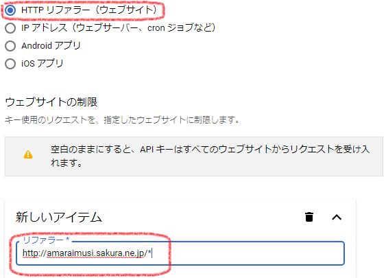
-
「キーを宣言」、フィルタの「Maps Static API」にチェックを入れ、「保存」ボタンを押したら制限完了。
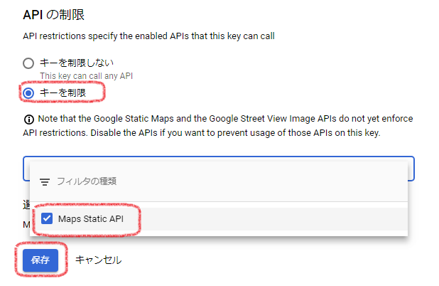
表示回数制限
1日の表示上限、100秒間の表示上限、1ユーザーの100秒間表示上限ができる。とりあえず1日の表示上限だけでも適切に設定すれば無課金にできる。
-
「Google Cloud Platform」にアクセスしAPIを選択する。
-
ダッシュボードのAPI一覧から「Maps Static API」をクリック。
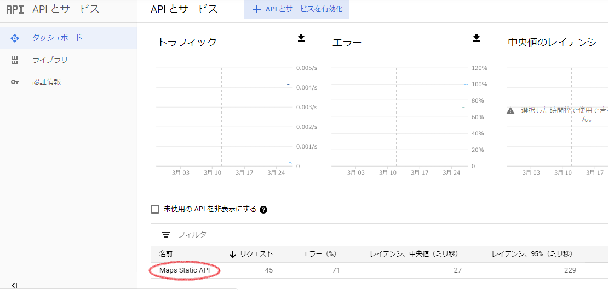
-
「割り当て」タブを選択する。
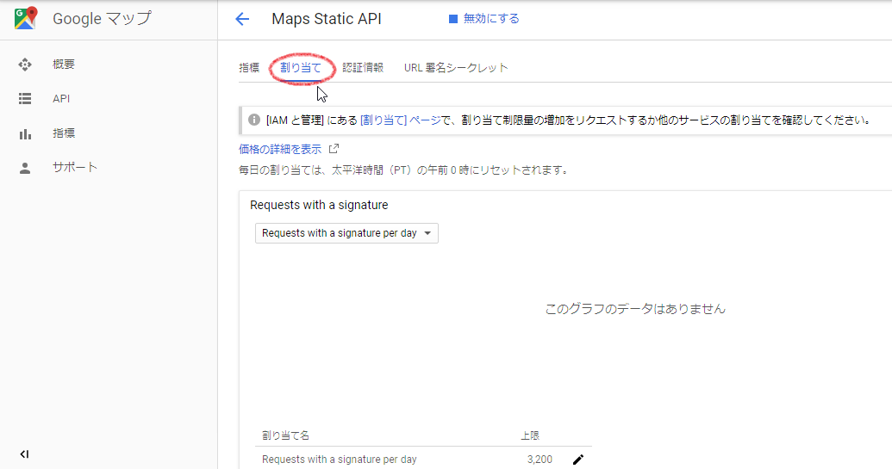
-
「割り当て」タブを選択している状態で少し下にスクロールすると表示制限ができる。
Requests with a signature per day 一日の表示上限 Maps Static API(ウェブ)は月10万件まで無料なので、31日で割り、3200くらいを設定してみる。 Requests with a signature per 100 seconds 100秒間の表示上限 集中アクセスを防ぐ目的の設定と思われる。とりあえず、100秒間の上限は500回くらいにしておけばよかろう。 Requests with a signature per 100 seconds per user 1ユーザーの100秒間の表示上限 ここの設定でDOSアタックや悪質なスクレイピングをある程度防げる。
100秒間に20回で良かろう。もう少し少なくてもいいかもしれない。
変更前（一部変更済み）

変更後
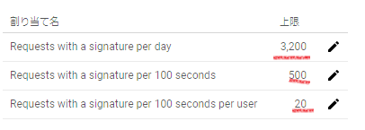
変更の注意
数値を変更すると「保存」が押せなくなるが、チェックボックスにチェックを入れると押せるようになる。
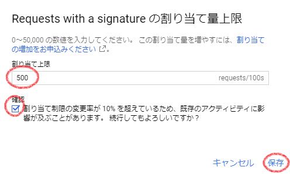 -
「未署名のリクエスト（URL署名シークレットが定義されている場合）」という似たような設定がある。
よくわからないがとりあえず同様に設定を変更する。
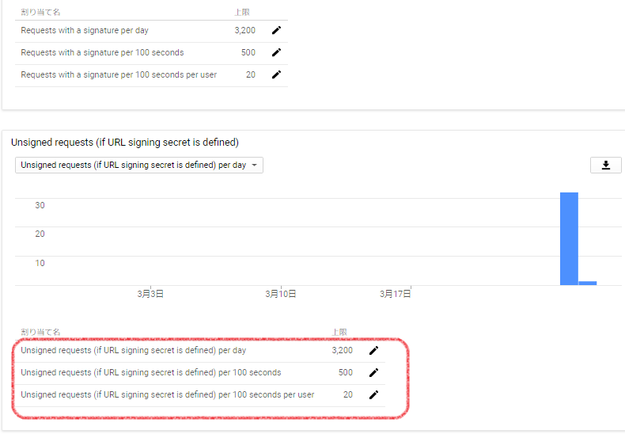
参考サイト